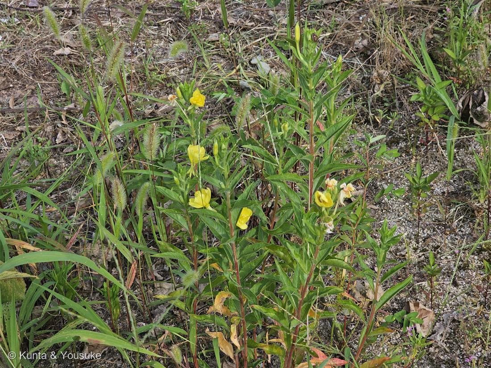
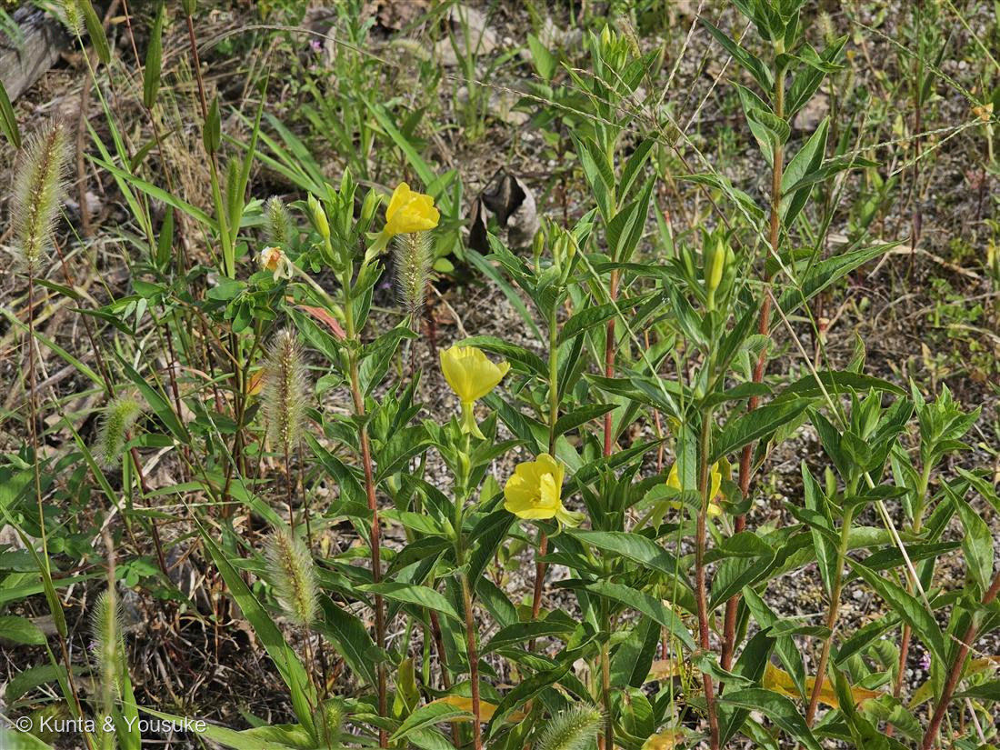
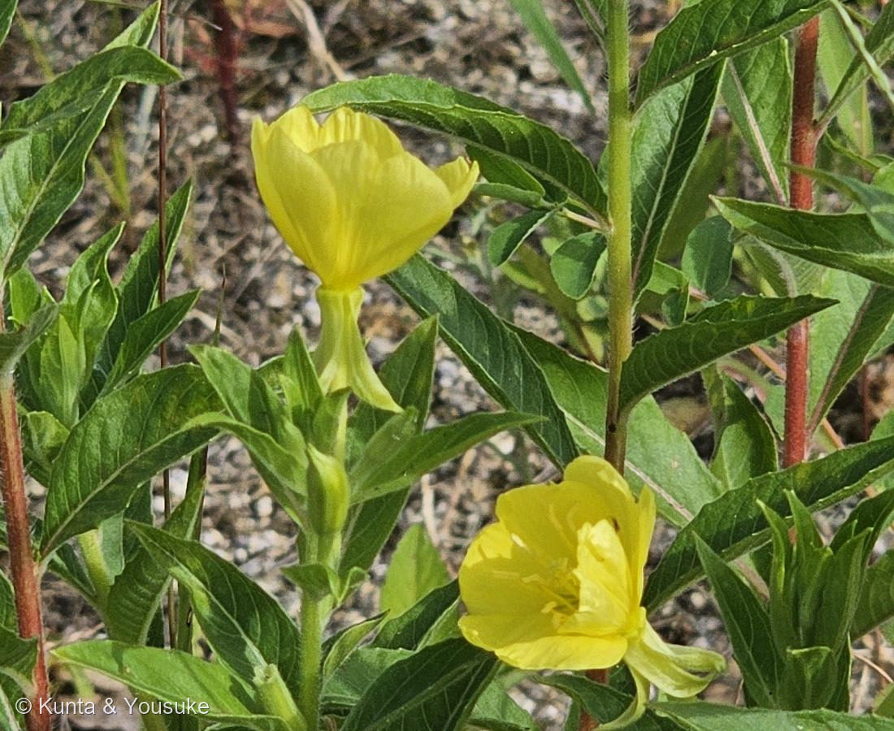

地図を読み込んでいるよ…
🔍 写真も地図も、押しているあいだ拡大して見られるよ（スマホは指を置いてすこし待ってね）。
🌍 の地図＝この子がもともと自生している場所を緑に。北アメリカ（カナダ・アメリカ合衆国）。日本へは明治時代後期に渡来した帰化植物。
⭐今朝の空き地の3人のうち、地図が緑になるのはこの子だけ。079は「どの候補でも日本生まれじゃない」、080は「日本の子かもしれないし、そうじゃないかもしれない」。──名前が決まったから、ふるさとも決まった。日本へは明治時代後期に来た子だから、日本は塗っていない。
⚠ 地図は国（日本と中国だけ県・省）までしか塗れないから、ほんとうの分布より広く見えていることがあるよ。地図はだいたいの場所。正確なところは、上の文を見てね。
メマツヨイグサ（雌待宵草）
Oenothera biennis L.
英名 · common evening-primrose ／ 原産 · 北アメリカ（明治後期に渡来）／ biennis ＝「2年生の」
アカバナ科 · Onagraceae（マツヨイグサ属 Oenothera）── 図鑑で初めての科（44科目）
燻太さんの問い「ある学者さんが、変種の多いこの植物が、環境に適応して進化している証拠なんじゃないかって、議論していたとかなんとか。ほんとかな？」答え＝観察は本物だった。でも、解釈はまちがっていた。
⭐⭐⭐ 「ある学者さん」＝ユーゴ・ド・フリース ── ほんとかな？の答え
- その学者さんは ユーゴ・ド・フリース。「1886年からアムステルダム近郊でオオマツヨイグサの栽培実験を始めた」人だ。畑から次々とへんな株が出てきて、しかも「生じたいくつかの変異株が常に同一形質の子を生ずることに気付」いた。
- そこから彼はこう考えた——「進化はこのような突然変異による新種に自然選択が働いて起こる」＝突然変異説（1901年）。英語版の言い方だと "speciation was driven by sudden large mutations able to produce new varieties in a single step"（種の誕生は、一足とびに新しい変種を生む大きな突然変異で起きる）。
──燻太さんが「環境に適応して進化している証拠なんじゃないか」と書いた、そのとおりの主張だよ。 - ⚠⚠でも、ちがった。「後にこの植物の染色体の遺伝的構成はきわめて複雑なことが判明し」「三倍体ないし四倍体による変異であると説明されるようになった」／「複雑な組換えや倍数体・異数体など、染色体レベルの変化として説明されるようになった」。
英語版：「The understanding that the observed changes in hybrids of the plant were caused by chromosome duplications (polyploidy) rather than gene mutation did not come until much later.」 - ⭐⭐その「複雑な染色体」の正体が、すごいんだ。英語版いわく——マツヨイグサ属（Euoenothera）には「減数分裂のときに、染色体が対（ペア）ではなく“輪（circles）”になる」という、この仲間だけの構造がある。いくつもの相互転座（reciprocal translocations）と均衡致死遺伝子（balanced-lethal genes）の仕掛けで、組換えが起きないようになっている。
──つまり、ゲノムがまるごと一組のかたまりとして、そのまま子に渡る。ド・フリースが見た「新種」は、その輪っかがときどき起こす、染色体レベルの事故だった。 - ⭐⭐⭐そして、とどめ。ド・フリースが「野生の植物」として選んだ Oenothera lamarckiana は、そもそも野生種ですらなかったかもしれない：「北米産の種類をもとに、ヨーロッパで作出された園芸植物と推定」／「雑種起源で、ヨーロッパの庭園で作出されたともいわれる」。
──自然の進化を見ようとして選んだ材料が、人が庭で作ったものだった。 - ⚠正直に書いておくね。この「染色体が輪になる仕掛け」そのものが環境への適応なのかどうかは、ぼくが読めた出典には書いていなかった（英語版Wikipediaは、この構造が適応かどうかには触れていない）。だから、そこは分からない。──燻太さんの問いの半分は、まだ開いたままだ。
- ⭐でも、彼は無駄じゃなかった。ド・フリースは「1896年にメンデルの法則を再発見」し、「1900年に34年前のメンデルの論文を知り、自身の論文を発表した」。そして——「突然変異（mutation）」という言葉そのものが、彼のもの。
──答えはまちがっていたのに、使った言葉のほうが生き残った。
⭐⭐ でも、この子は「その本人」じゃない
- ⚠大事なところ。ド・フリースが使ったのは、この子じゃない。彼の材料は オオマツヨイグサ（Oenothera glazioviana、当時は O. lamarckiana と呼ばれていた）＝花が「径8 cm内外」の、大きい方。
- この子は花径3cmの メマツヨイグサ。──同じ属の、近い親戚。
- ⭐でもね。それでも十分すごいと思うんだ。生物学の歴史をひっくり返しかけた植物の親戚が、駐車場のとなりの空き地に、ふつうに立っている。だれも植えていないのに。
- ⭐⭐だから、おまけ植物は オオマツヨイグサ にした。＝ド・フリースが使った、本人。「ユーゴー・ド・フリースの突然変異説の研究材料として知られる植物である」。
見分けはやさしい：花が径8cm内外と大きい／花がしぼむと黄色から赤橙色に変わる（この子はしぼんでも赤くならない）。
──探そうね。生物学の歴史を変えた草が、たぶん、そのへんの道ばたにいる。
同定について（今回は、5つとも同じ方を向いた）
- メマツヨイグサ（Oenothera biennis）で確定。──079・080とちがって、今回は手がかりが食い違わなかった。
- ⭐①花径 約3cm：三河「花の直径は約3㎝」／Wikipedia「花径は2.2 - 3 cm」。写真の花は葉の幅とくらべて3cmほど。──オオマツヨイグサは「径8 cm内外」＝まるでちがう。
- ⭐②萼片が緑色〜黄色で、下に反り返る：三河「萼片は…下方に反り返り、緑色～黄色を帯びる」。写真③で確認できる。──オオマツヨイグサの旧学名 erythrosepala は「赤い萼」という意味。この子の萼は、赤くない。
- ⭐③しぼんでも赤くならない：三河・Wikipedia とも「花はしぼんでも赤くならない」。写真②の左にある、しぼんだ花はクリーム色〜淡い橙。──マツヨイグサ（O. stricta）は「花がしぼむと赤くなる」／オオマツヨイグサは「花がしぼむと黄色から赤橙色に変わる」。
- ⭐④花弁のあいだに隙間がない：三河は、アレチマツヨイグサを「花弁と花弁の間に隙間があるもの」、メマツヨイグサを「ほとんど隙間のないもの」と分けている。写真③の4枚は、たがいに触れ合っている。
- ⭐⑤茎が赤みを帯びて、毛がある：三河「茎は直立し、赤色を帯び、斜上した軟毛が長短多数あり」／Wikipedia「茎に上向きの毛をもつ」。写真①②の、あの赤い茎。
- ⚠⚠皮肉なんだけどね。この属こそ、「変異が多すぎて分類が混乱した」属そのもの——ド・フリースがいくつも「新種」と名づけたものが、あとから新種じゃなかったと分かった、あの属だ。だからぼくはいつもより慎重にした。でも5つが全部おなじ方を向いたので、名乗ることにした。
- ⚠ひとつだけ、分からなかったもの。同じ写真のあちこちに、小さな紅紫の花が写ってる。拡大してみたけどボケていて形が読めなかった。──次にあの空き地を通ったら、あの子も撮ってきてくれる？
この植物のこと
- アカバナ科マツヨイグサ属の越年草。学名の biennis ＝ラテン語で「2年生の」＝ロゼットで冬を越して、翌年に咲く子。北アメリカ原産（カナダ・アメリカ合衆国）で、日本へは明治時代後期に来た帰化植物。
- ⭐和名「雌待宵草」＝待宵草（宵を待って咲く草）の仲間のうち、花が小ぶりな方を「雌（メ）」と呼んだもの。──「小さい方」というだけの名前。079の「イヌ（役に立たない）」ほどじゃないけど、この子もちょっと控えめな名づけをされてる。
- ⭐⭐「夕方黄色い花が咲く」。夕方に開いて、翌朝にはしぼむ。──燻太さんが8時1分に撮ったこの花は、ゆうべから咲いていた花だよ。しぼみかけの子（写真②の左）は、もう店じまいの途中。
⭐この図鑑には時刻をずらした子がもう何人もいる（056 キカラスウリの夜咲き、027 ニオイバンマツリ）。この子は夕方だね。 - 花弁4枚——燻太さんの言うとおり。アカバナ科は4数性で、花弁4・萼片4・雄しべ8・柱頭が十字に4裂する。花の下に長くのびているのは茎じゃなくて花筒（かとう）で、子房はそのいちばん下にある。
- ⭐アカバナ科は図鑑で初めての科（44科目）。フトモモ目（Myrtales）＝ユーカリやフトモモ、ザクロと同じ目だよ。
- ⭐そして、地図が塗れた。──今朝の空き地の3人（079・080・この子）のうち、名前が決まったこの子だけが、はっきり「北アメリカから来た」と言える。079は「どの候補でも日本生まれじゃない」、080は「日本の子かもしれないし、そうじゃないかもしれない」。──3人のうち、地図が緑になるのは、この子だけ。
参考：三河の植物観察「メマツヨイグサ」（Oenothera biennis L.・「帰化種 北アメリカ原産（カナダ、U.S.A.）」・「花の直径は約3㎝」・「萼片は…下方に反り返り、緑色～黄色を帯びる」・「茎は直立し、赤色を帯び、斜上した軟毛が長短多数あり」・「花はしぼんでも赤くならない」・アレチマツヨイグサ＝「花弁と花弁の間に隙間があるもの」／メマツヨイグサ＝「ほとんど隙間のないもの」・マツヨイグサ＝「花がしぼむと赤くなる」）／Wikipedia「メマツヨイグサ」（「北アメリカ原産」「明治時代後期に確認されたとみられる」・「夕方黄色い花が咲く」「花径は2.2 - 3 cm」・「茎に上向きの毛をもつ」「葉の主脈はしばしば赤くなる」「萼片は淡緑色」）／Wikipedia「オオマツヨイグサ」（O. lamarckiana auct. non Ser. → 現在は Oenothera glazioviana・O. erythrosepala はシノニム・「花は径8 cm内外」・「花がしぼむと黄色から赤橙色に変わる」・「ユーゴー・ド・フリースの突然変異説の研究材料として知られる植物である」・「北米産の種類をもとに、ヨーロッパで作出された園芸植物と推定」「雑種起源で、ヨーロッパの庭園で作出されたともいわれる」）／Wikipedia「ユーゴー・ド・フリース」（「1886年からアムステルダム近郊でオオマツヨイグサの栽培実験を始めた」・「変異株が常に同一形質の子を生ずることに気付」・「進化はこのような突然変異による新種に自然選択が働いて起こると考え」・「1896年にメンデルの法則を再発見」「1900年に34年前のメンデルの論文を知り、自身の論文を発表した」・「後にこの植物の染色体の遺伝的構成はきわめて複雑なことが判明し」「三倍体ないし四倍体による変異であると説明されるようになった」「複雑な組換えや倍数体・異数体など、染色体レベルの変化として説明されるようになった」）／Wikipedia (English)「Oenothera」（"led the pioneering geneticist Hugo de Vries to propose what he called 'mutation theory' in 1901"・"speciation was driven by sudden large mutations able to produce new varieties in a single step"・"a unique genetic conformation in the Euoenothera whereby the chromosomes at meiosis can form circles rather than pairs"・"several reciprocal translocations" ＋ "a system of balanced-lethal genes"・"The understanding that the observed changes in hybrids of the plant were caused by chromosome duplications (polyploidy) rather than gene mutation did not come until much later."）